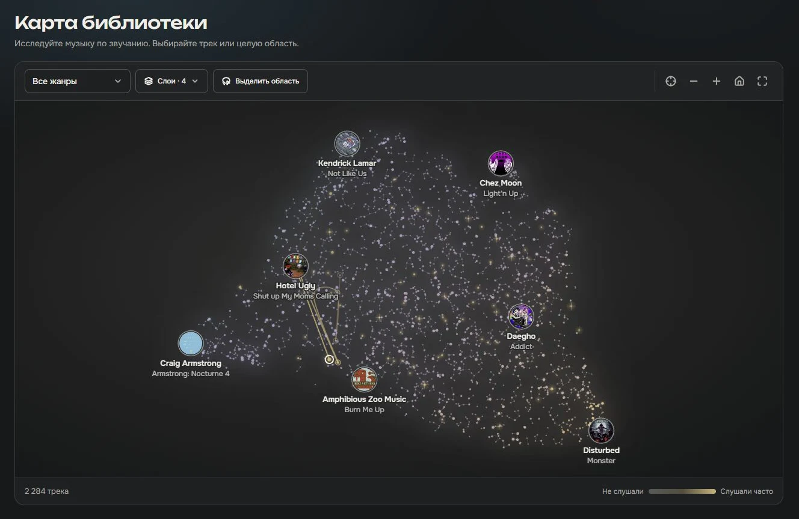
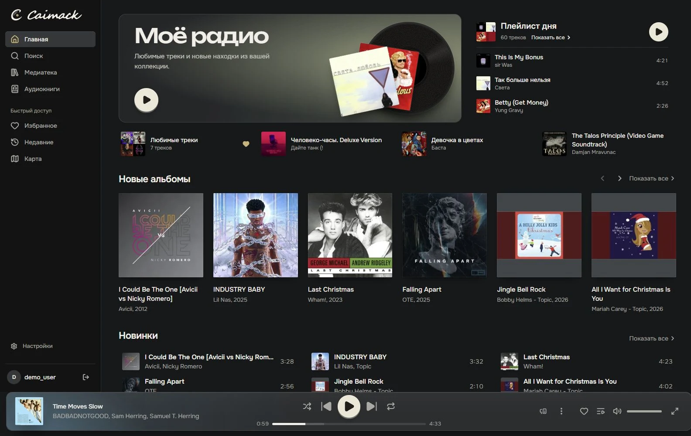
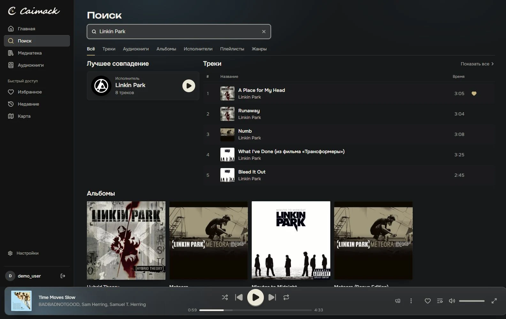
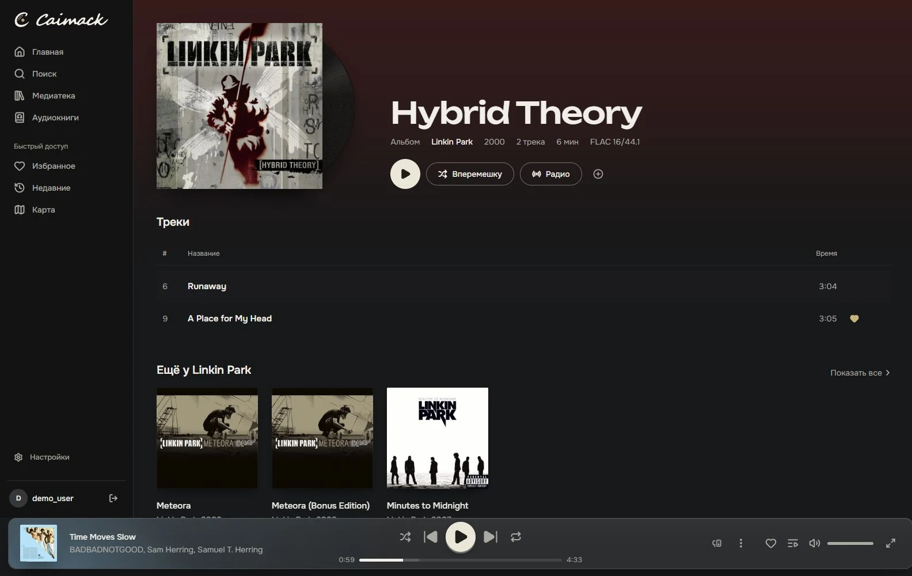
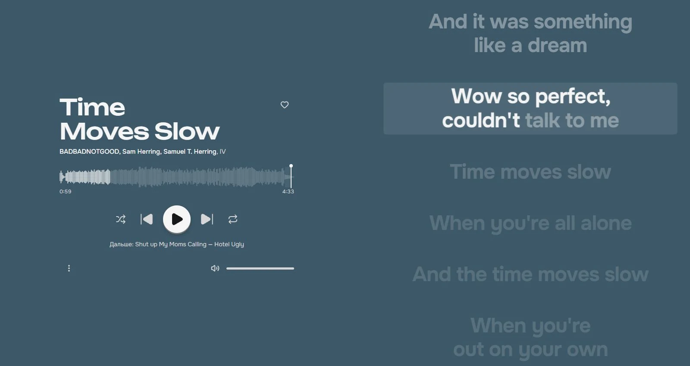
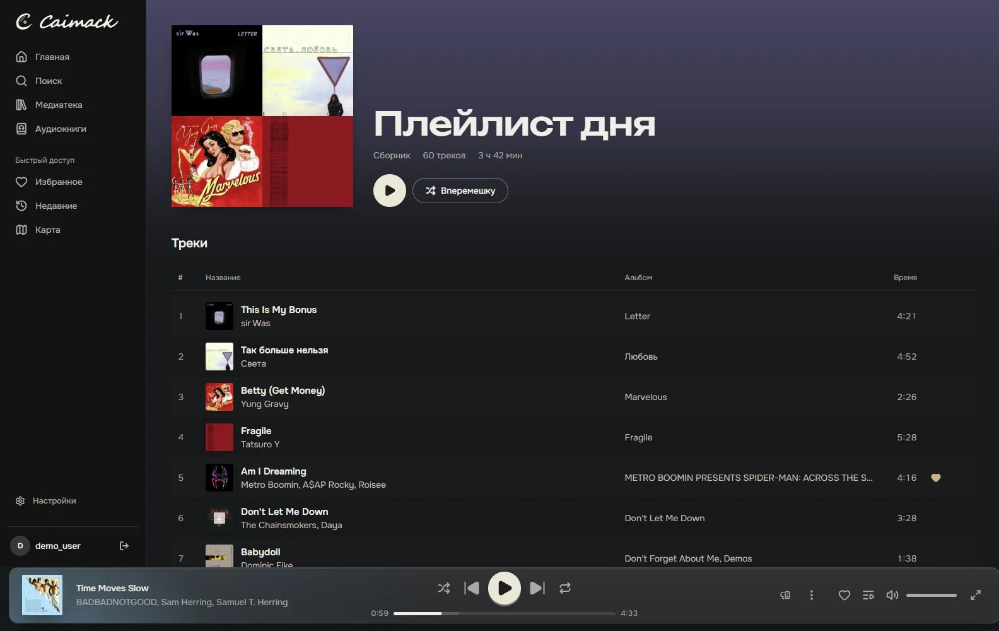
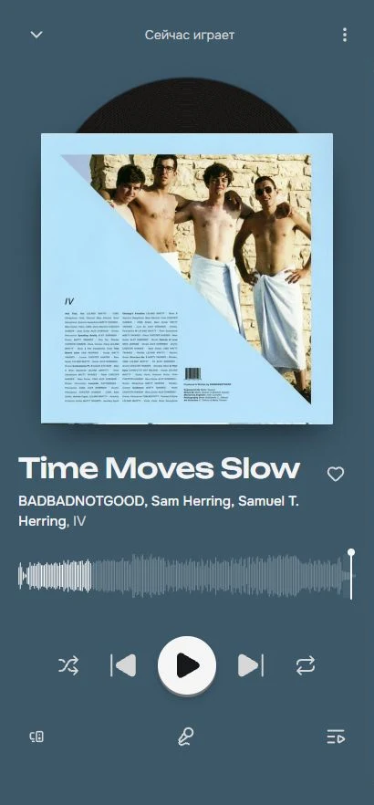

Статистика за неделю
Минуты прослушивания, топ треков и исполнителей и активность по дням. В веб-версии и на Android.
Открытый музыкальный сервер
Собери MP3 и FLAC в одной медиатеке. Слушай дома, продолжай на телефоне и бери музыку с собой офлайн.
Подключи папку только для чтения. Caimack сам соберёт каталог.

Скачай медиатеку на Android и слушай, даже когда домашний сервер выключен.
Как работает офлайнПодключи папку с MP3 и FLAC или загрузи альбомы через браузер. После сканирования можно найти трек по названию или открыть альбом по обложке.
Сохраняй альбомы, исполнителей и плейлисты во вложенные папки. Переключайся между списком и сеткой, возвращайся к избранному и истории. Исходное аудио и история прослушиваний хранятся на твоём сервере.



Слушай в исходном качестве, проигрывай альбомы без пауз и меняй порядок в очереди. В полноэкранном режиме крутится пластинка, фон подстраивается под обложку, а по звуковой волне можно перематывать трек.
В веб-плеере есть кроссфейд, умные переходы, нормализация громкости и эквалайзер.
Caimack сам ищет тексты песен и подсвечивает слова или слоги, когда для них есть таймкоды.

Включи личное радио, запусти радио от выбранного трека или послушай микс дня. Радио учитывает сходство звучания и то, как ты слушаешь музыку. В настройках можно искать более близкие треки или расширить подборку.
На карте коллекции похожие по звучанию треки расположены рядом: выдели область, чтобы её прослушать, или выбери трек, чтобы запустить радио.

Слушай в браузере, установи мобильную PWA или скачай приложения для Android, Windows и Linux. На Android доступны Android Auto и фоновое воспроизведение.
Начни слушать на компьютере, затем управляй плеером с телефона или перенеси очередь и позицию на другое поддерживаемое устройство. Оба устройства должны быть онлайн. Войди на них в один аккаунт.
Скачать приложения
Когда файлы загружены, на Android можно открыть коллекцию и слушать её без интернета, даже если домашний сервер выключен.
Открой Caimack на телефоне и подключись к серверу в домашней сети.
В настройках загрузок на Android включи синхронизацию всей медиатеки и дождись окончания загрузки.
На телефоне останутся исходное аудио, обложки, доступные тексты и плейлисты.
Прослушивания, лайки и правки плейлистов отправятся на сервер при следующем подключении.
С включёнными рекомендациями сервер может подготовить для офлайна миксы и очередь радио с ограниченным числом треков. Для радио по треку и карты коллекции нужна связь с сервером.
Скачивай отдельные треки, альбомы и плейлисты. На компьютере полная синхронизация по локальной сети также сохраняет музыку и плейлисты M3U8 в выбранную папку.
Руководство по синхронизации AndroidМинуты прослушивания, топ треков и исполнителей и активность по дням. В веб-версии и на Android.
Включи раздел аудиокниг, чтобы сохранять позицию в каждой книге, синхронизировать прогресс и скачивать книги по отдельности.
Экспериментальные интеграции в веб-версии ищут и импортируют доступные треки и плейлисты из Яндекс Музыки и VK Музыки. Для VK нужны расширение Chromium и вкладка VK с выполненным входом.
Да. Caimack определяет дубликаты по аудио, даже если метаданные файлов различаются.
Да. Переименование по данным каталога включается отдельно и требует доступа на запись.
Да. Можно включить экспорт обложек и синхронизированных текстов в формате LRC.
Подготовь папку с музыкой и компьютер или NAS с Docker Compose v2. Выбери, откуда будешь подключаться.
Для Android в локальной сети публичный домен и HTTPS необязательны. Настрой отдельный локальный HTTP-адрес, укажи приватный IP и порт сервера и включи «Разрешить HTTP в локальной сети» в настройках подключения Android.
Полная синхронизация медиатеки идёт по локальной сети.
Направь домен на сервер. При первом запуске мастер попросит домен, путь к папке с музыкой и имя администратора, а затем настроит HTTPS.
git clone https://github.com/BulatRuslanovich/caimack.git
cd caimack
./caimack.shПосле запуска открой Caimack в браузере, войди и найди свой первый альбом.
Быстрый старт на GitHub